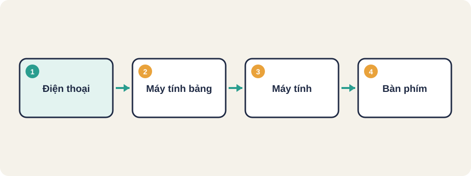
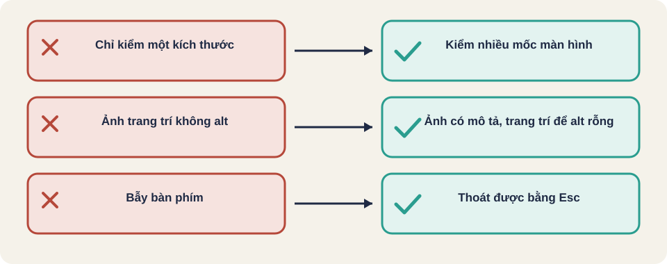

Hình vẽ gốc, dùng để minh họa thứ tự các bước chính của bài.
Kiểm bố cục trên nhiều kích thước màn hình, dùng bàn phím, đọc được bằng trình đọc màn hình, và tương phản màu đủ cao.

Hình vẽ gốc, dùng để minh họa thứ tự các bước chính của bài.
| Thiết bị | Chiều rộng |
|---|---|
| Điện thoại | 360 đến 430 px |
| Máy tính bảng | 768 đến 1024 px |
| Máy tính | 1280 px trở lên |
Thuật ngữ trong slide này: Focus (tiêu điểm): Phần tử đang được chọn khi dùng bàn phím, thường có viền nổi lên.
Ngưỡng cho chữ thường là 4,5 : 1. Nên chọn màu đậm hơn một chút để an toàn.
Công cụ kiểm tương phản và kiểm truy cập tự động bắt được nhiều lỗi cơ bản. Lỗi về thứ tự đọc, bẫy bàn phím và cách trình đọc màn hình đọc nội dung vẫn cần kiểm bằng tay.
Thuật ngữ trong slide này: Truy cập (accessibility, a11y): Làm cho người khiếm thị, không dùng chuột, hoặc dùng trình đọc màn hình vẫn dùng được sản phẩm.
Kiến thức chung, chưa đối chiếu nguồn gốc.
Thuật ngữ trong slide này: Focus (tiêu điểm): Phần tử đang được chọn khi dùng bàn phím, thường có viền nổi lên.
| Thành phần | Cần có |
|---|---|
| Ô nhập | Nhãn liên kết với ô (label) |
| Ảnh chức năng | Mô tả thay thế (alt) nói chức năng |
| Ảnh trang trí | alt rỗng để trình đọc bỏ qua |
| Thông báo lỗi | Gắn với ô sai, được đọc khi xuất hiện |
Kiến thức chung, chưa đối chiếu nguồn gốc.
Với chữ thường, tỉ lệ tương phản tối thiểu thường được nêu là 4,5 : 1. Công cụ kiểm tương phản tự động có thể đo, nhưng tester vẫn cần xem chữ trên nền có dễ đọc không, đặc biệt khi phóng to.
Kiến thức chung, chưa đối chiếu nguồn gốc.
Thuật ngữ trong slide này: Tỉ lệ tương phản (contrast ratio): Độ khác biệt giữa màu chữ và màu nền. Càng cao càng dễ đọc.

Truy cập (accessibility, a11y)
Thuộc tính alt
Tỉ lệ tương phản (contrast ratio)
Focus (tiêu điểm)
Truy cập không chỉ là màu sắc. Người dùng khiếm thị hoặc không dùng chuột cần đi qua được toàn bộ trang.
Thuật ngữ trong slide này: Truy cập (accessibility, a11y): Làm cho người khiếm thị, không dùng chuột, hoặc dùng trình đọc màn hình vẫn dùng được sản phẩm. · Focus (tiêu điểm): Phần tử đang được chọn khi dùng bàn phím, thường có viền nổi lên.
Thuật ngữ trong slide này: Focus (tiêu điểm): Phần tử đang được chọn khi dùng bàn phím, thường có viền nổi lên.
Kiến thức chung, chưa đối chiếu nguồn gốc. Các mốc chỉ là gợi ý, nên lấy từ số liệu người dùng thật.
Nguồn: github.com/PaulWaltersDev/FreeLearningResourcesForSoftwareTesters, mục "Mục mở rộng (liên quan Test Automation)". Tìm tên tài liệu trong repo để lấy liên kết.
Thuật ngữ trong slide này: Truy cập (accessibility, a11y): Làm cho người khiếm thị, không dùng chuột, hoặc dùng trình đọc màn hình vẫn dùng được sản phẩm.